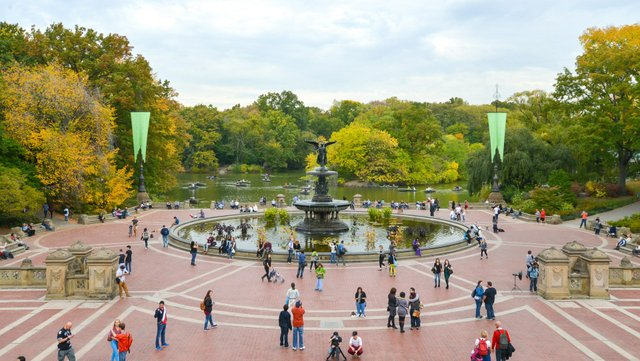
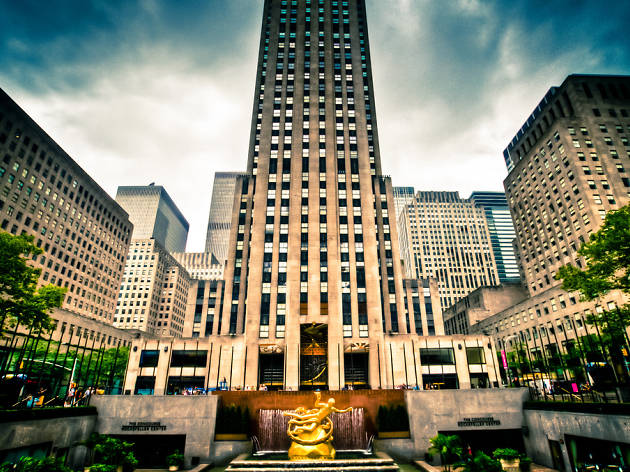

A week of adventrues in the great New York City
I was lucky enough to spend a whole week and 2 days visiting New York City! I went with two of my closest friends and we were able to see many things while we were there!
Day 1
On our first day, we started by visiting Brooklyn Bridge Park right away. The Park was dazzling (check out that beautiful picture!) We ate dinner at a cute little bistro overlooking the Manhattan and Brooklyn Bridges.
Day 2
On the second day, we ventured out to Times Square to explore all the amazing Broadway Musicals. We decided to purchase tickets to see Phantom of the Opera and the famous Wicked musicals. For dinner, we ate at this gourmet Italian restaurant. The experience sure was blissful. Furthermore, we experience the delighful street performances and were captivated by the endless music and liveliness the city has to offer.
Day 3
On our third day, we started by visiting the Museum of Sex. We decided to explore the rich history that is involved with sex. The exhibits were very informative and depicted sex in a varity of different perspectives. After the awesome musuem experience, we traveled back to Time Square to watch the famous Wicked musical. Which for me, it was the second time I would be cherishing the play.
Day 4
On our fourth day, we started by visiting Central Park right away. The Park was dazzling (check out that beautiful picture!) The Park adventure lasted a few hours as the park had many tourist attractions to see and explore. Most of the day was well spent at the park, and afterwards, we left to explore more of the Manhattan Island such as the Rooftop bars.
Day 5
On our fifth day, we started by visiting the World Trade Center. The mounument and history took us to a time of shock. As we gazed upon the structure before us, we reflected on the tragic event that occured while we were in elementary school. The experience was thrilling and fulfilling. After this, we explored the beauty of Chinatown and Little Italy. Ending our day, we had the opportunity to explore history once again, as we went to the famous LGBT Stonewall Inn.
Day 6
On our sixth day, we started by visiting the Metropolitan Musuem right away. The Musuem was loaded with many exhibits from Ancient Egypt to modern fashion. This beautiful building had hours of exploration and amazing ones at that. For dinner we decided to head back to Brooklyn and have some delicious New York cuisines and lastly we ended the day by heading out to the drag show perforemces at the famous Brooklyn Bazaar.
Day 7
On our seventh day, we started by visiting the Rockefeller Center. The center was dazzling (check out that beautiful picture!) We also explored the Nintendo store where I got nerdy perspective into play. So much Pokemon and other Nintendo famous characters was like a dream come true.
Day 8
On our last day, we started by visiting Liberty Island. The Island was dazzling (check out that beautiful picture!) The weather was kind of rainy during that day but eventually the sun bloomed passed the clouds and the views were spectacular.